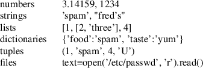
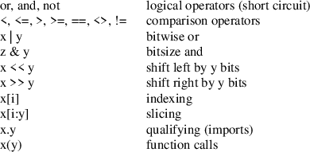

Index
1. The first lecture
- this module consists of two pieces
of coursework
- in the first term,
Missile Commmand
implemented in Python3 and Pygame
- in the second term, a
map editing tool for a tablet implemented in Python3
- both pieces of coursework are worth 50%
2. Access to the software in this module
- in this module Python3 will be
taught on the GNU/Linux operating system
- there are two
supported approaches to run Python3
-
firstly using vmware
- secondly using the Rasbperry Pi-4
- both give the same user level experience
-
please see the other two components of the lecture this week
for more details on either approach
3. Python
- Python is a scripting language
4. Python Gotha’s
- blocks are defined by indentation!
- turn off tabs in your favourite editor
- in your own
programs examples never create a name clash with a Python
library module
- Python2 vs Python3
5. Python verses similar tools
- Python is a scripting language
- it can be compiled if necessary to
increase speed
- is more powerful than many other
scripting languages, Tcl
- applicable to
larger systems development (games, net admin)
- has
a much cleaner syntax than Perl
- does not compete head on with Java
- Java is a systems language like
C++
6. Python and games
7. Python can be simple
8. Python Modules allow for problem decomposition
- similar to Modula-2
-
myfile.py
#!/usr/bin/python3
title = "hello world"
foo.py
#!/usr/bin/python3
import myfile
print(myfile.title)
- when run prints hello world
9. Alternative import
bar.py
#!/usr/bin/python3
from myfile import title
print(title)
note that all python modules
need to be saved as name.py
- so in our example the module
myfile was saved into a file called
myfile.py
10. Python builtin types
- python
contains many builtin types
- builtin objects make simple programs easy to
understand
- lists, dictionaries, exist,
don’t reinvent the wheel
- built in objects
are more efficient than custom data types
11. Builtin objects

12. Expression operators

13. Strings
#!/usr/bin/python3
print("hi " * 4)
yields
hi hi hi hi
14. Slicing
- given a
string, s= "hello world"
- can obtain portion of string via:
s[2:5]
- yields: llo
- first
character has index 0
- and also -11
- last character index is 10 in this example
- last
character index is also -1
- negative values start
at right and move to the left
- strings can be sliced
using positive and negative values
15. Using dir
- often you may
wish to see what methods a module provides
python
Python 1.5.2
>>> import string
>>> dir(string)
[’capitalize’, ’capwords’, ’center’, ’count’, \
’digits’, ’expandtabs’, ’find’, ’hexdigits’, \
’index’, ’index_error’, ’join’, ’joinfields’, \
’letters’, ’ljust’, ’lower’, ’lowercase’, \
’lstrip’, ’maketrans’, ’octdigits’, ’replace’, \
’rfind’, ’rindex’, ’rjust’, ’rstrip’, ’split’, \
’splitfields’, ’strip’, ’swapcase’, \
’upper’, ’uppercase’, ’whitespace’, ’zfill’]
displays methods available
16. Methods and documentation
-
python online docs
-
tutorial/laboratory
- read through the
online tutorial under the web address above
- read about
functions and scope rules
- name
resolution, LGB rule
- local, global, builtin
scope
17. Statements
- assignment,
calls, if/else/elif, for, while, break/continue
- print used to
be a statement in Python 2, it is a function in Python 3
- try, except, raise,
- def, return
- function definitions and returning
values
18. Statements
- class
-
assert
- exec
- del
- global
19. Example 8 times table
#!/usr/bin/python3
for n in range(1, 13):
print(n, "x 8 =", n*8)
$ python3 eight.py
1 x 8 = 8
2 x 8 = 16
3 x 8 = 24
4 x 8 = 32
5 x 8 = 40
6 x 8 = 48
7 x 8 = 56
8 x 8 = 64
9 x 8 = 72
10 x 8 = 80
11 x 8 = 88
12 x 8 = 96
20. Example of for loop
#!/usr/bin/python3
for n in range(2, 10):
print("n is", n)
else:
print("finished for loop, n is", n)
./py7.py
n is 2
n is 3
n is 4
n is 5
n is 6
n is 7
n is 8
n is 9
finished for loop, n is 9
21. Tricky example code
#!/usr/bin/python3
for n in range(2, 10):
print("n is", n)
for x in range (2, n):
print("x is", x)
if n % x == 0:
print(n, "equals", x, "*", n/x)
break
else:
print(n, "is a prime number")
./py6.py
2 is a prime number
3 is a prime number
4 equals 2 * 2
5 is a prime number
6 equals 2 * 3
7 is a prime number
8 equals 2 * 4
9 equals 3 * 3
22. Graphical hello world as an example of Python simplicity
#!/usr/bin/python3
import Tkinter
def makebutton(message):
w = Tkinter.Button(text=message, command=’exit’)
w.pack()
w.mainloop()
makebutton("Hello world")
23. Tutorial
- to undertake
these tutorials you will need to refer to the
python online docs
- write a program using a while loop
- to write out the nine times table
- write a program using a for loop
- to write out the seven times table
- write a program using a function and if else
statement
- to write out the 3 times
table
Index
1. The first lecture
2. Access to the software in this module
3. Python
4. Python Gotha’s
5. Python verses similar tools
6. Python and games
7. Python can be simple
8. Python Modules allow for problem decomposition
9. Alternative import
10. Python builtin types
11. Builtin objects
12. Expression operators
13. Strings
14. Slicing
15. Using dir
16. Methods and documentation
17. Statements
18. Statements
19. Example 8 times table
20. Example of for loop
21. Tricky example code
22. Graphical hello world as an example of Python simplicity
23. Tutorial
Index
This document was
produced using
groff-1.22.